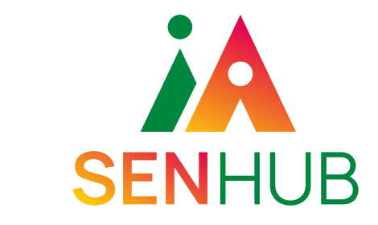
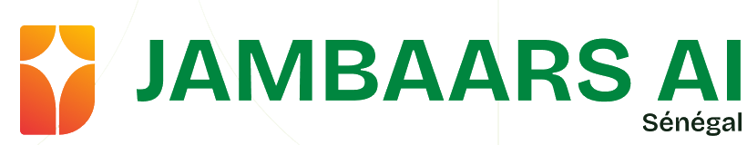
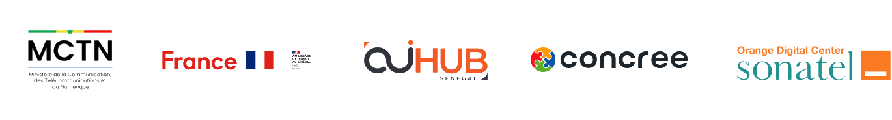

MAQUETTE · PHOTOS ILLUSTRATIVES
DEMO DAY FINAL ~ JAMBAARS AI
Intervenants


Ndeye DiopChargée du programme JAMBAARS AI
Vendredi 20 Novembre 2026 · 10h00
CONCREE Hub, Dakar
Restez connectés
aux temps forts
aux temps forts
